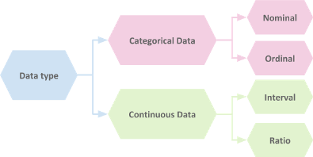

Data types
Knowing what kind of data you are dealing with is an essential phase
to better extract insights from the data; since for each data type,
you need to use the right mathematical techniques and visualization
types. There are basically two main types of data: Categorical and
Continuous.

Here is an example of different data type:
| Categorical |
Continuous |
- Male/Female
- Martial status
- Countries’ names
- Colors
- Political parties
- Levels
- Times of day
|
- Intelligence quotient
- Temperature
- Distance
- Weight
- Height
- Age
|
A. Categorical data
Data is labeled categorical if their values describe a quality, grade,
level, or any other characteristics, such as happy/neutral/sad,
low/high, dark/light. Categorical data can be Nominal or Ordinal.
1. Nominal data
Nominal data is a type of categorical data where the order doesn’t
matter. Examples of nominal data:
- Male/Female.
- Countries’ names.
- Colors.
- …
To identify nominal data, ask yourself the following question: Will
the meaning change if I change the variables’ order? If not, you have
nominal data.
2. Ordinal data
Data is ordinal if it represents an ordered quality variable, and the
number of units in each variable is not the same. Example of ordinal
data:
Levels
-
Low, medium, and high. Each level could have different units of
measurement, such as the level of happiness, pain, etc.
Times of day
-
Morning: from sunrise to 11:59 am, it is around 6hours or 6 units
of time.
-
Afternoon: from 12:00 pm to 5:00 pm, it is 5 hours or 5 units of
time.
-
Evening: from 5:01 pm to 8:00 pm, it is 3 hours or 3 units of
time.
-
Night: from 8:01 pm to sunrise, it is around 10hours or 10 units
of time.
Educational stages
- Preschool: from 3 to 5 years old, and it has one grade.
-
Elementary school: from 5 to 14 years old, and it has 8 grades.
- High school: from 14 to 18 years old, and it has 3 grades.
-
College: from 18 to 22 years old, and it has 4 to 5 years of
education.
- Graduate school: ages vary.
B. Continuous data
Data is labeled continuous if the values are measured, such as how
many kgs of gold do I have? I have 30,5kg of gold; How big is the
farm? The farm is 1km2 or 100 hectares (0.3861 square miles), etc. The
data could be discrete (.., -1, 0, 1, 2, ..) or continuous (…, 0.123,
0,456, …). Continuous data could be either interval or ratio.
1. Interval data
Interval data represents values where proportion doesn’t make sense,
and the zero has no meaning. I can not say that a person with 160 IQ
is twice as intelligent than a person with an IQ of 80, or a
temperature of 20° is 20 times more than 0°. Example of interval data:
- Intelligence quotient or IQ.
- Temperature.
- Time of the day, ex: 1 pm, 2 pm, 4 am, etc.
Remark
Interval data is often used in the social sciences.
2. Ratio data
For ratio data, the zero has a meaning as a point of reference, and
proportions make sense: I can say that 4kg is two times 2kg or 4 times
1kg, and the minimum weight is 0kg. Example of ratio data:
- Distance: 5km, 1,84m, etc.
- Weight: 81.5kg.
- Days: 2 or 3 days.
- Times: 1 hour, 34min.
Remark
Notice that ratio data does not have negative values, as there is no
negative height or weight. Ratio data is popular in physical sciences.